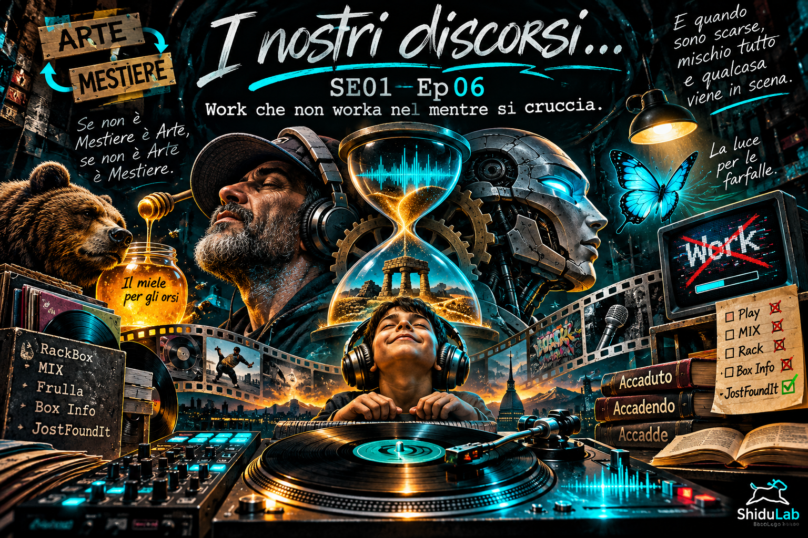

31 ottobre 2026 · SE01 Ep06Work che non worka nel mentre si cruccia.
Una giornata di RackBox, musica, Box Info, JostFoundIt, ArtistaGiano, I-Dee, Work e FilosoVia.
Il Format di ShiduLab. I passaggi, gli assaggi e l'Accadendo che prende forma in teatro narrato.
Stagione 01 · Opere pubblicate

31 ottobre 2026 · SE01 Ep06Una giornata di RackBox, musica, Box Info, JostFoundIt, ArtistaGiano, I-Dee, Work e FilosoVia.